Comment organiser ses dossiers?
L'organisation du dossier est très important. En effet, lorsque l'on a qu'un seul projet, celà ne nous parrait pas important. Pourtant, les projets vont vite s'enchainer et devenir beaucoup plus important. Une organisation s'impose pour pouvoir mieux se retrouver.
1. Création du dossier qui regroupe tous nos projets
Dans un premier temps, il faut créer un dossier qui regrouperas tous nos dossiers de projets de code
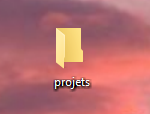
2. Création du dossier de ton futur projet
Ouvre le dossier "projets", et à l'intérieur de celui-ci, il faut créer un autre dossier au nom du projet que tu veux réaliser.
// Par exemple ici, je l'ai appelé tuto_html
/!\ Pour le nom de dossier/fichier il ne faut pas mettre d'espace.
On peut le remplacer par un tiret vers le bas (underscore [touche 8]).
3. Création des dossiers "images" et "css"
Ouvre le dossier tuto_html et dans celui-ci crée deux dossiers. Un dossier images et un autre css
/!\ Nommez les simplement pour qu'elles ne soient pas compliqué à écrire dans le code, sans accents et caractères spéciaux. Les chiffres sont acceptés.
Exemple : maison.png, fleur.jpg
Le dossier css regroupera toutes les feuilles de style dont nous aurons besoin.
4. Afficher l'extension des fichiers
Pour la prochaine étape, nous aurons besoin de voir l'extension du fichier pour la renomer.
Pour celà il faut aller dans "Affichage" puis cocher la case "Extension de noms de fichiers"
5. Ajouter le fichier Html à la racine
Maintenant il faut créer la page Html. C'est dans cette page que va se trouver la structure du site ainsi que tous les éléments de texte.
1. Faire un clic droit sous le dossier "images".
2. Selectionner "nouveau" -> "document texte".
3.Faites un clic droit sur ce nouveau fichier et selectionner "renomer".
On le renomme en index.html
Le dossier css regroupera toutes les feuilles de style dont nous aurons besoin.
// On le nomme index.html car c'est ainsi que l'on nomme sa page d'accueil. Beaucoup d'herbergeurs demandent d'avoir un fichier index.html pour pouvoir faire fonctionner le site. En développement local il n'est pas nécessaire de le nommer comme celà mais il est préférable de s'habituer à la convention.
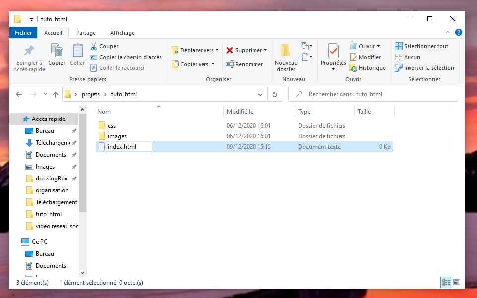Un message va apparaitre. Il demande si vous voulez vraiment modifier l'extension. Vous dites oui
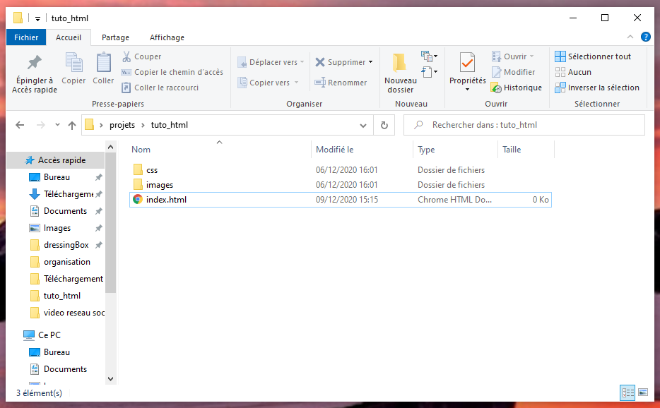Voilà ! la page html est créée.
6. ajouter un fichier CSS
On se positionne dans le dossier "css".
Clic droit -> nouveau -> document texte
Puis on va nommer ce fichier : style.css
// Ce fichier servira pour la customisation du projet.
La page css sert par exemple à changer la police d'un texte,
changer la couleur de fond de page, d'une zone ou d'un texte,
positionner ses éléments de textes comme on le souhaite etc...
Comment ouvrir son projet dans Visual studi code?
Pour commencer à coder, il faut un éditeur de texte.
Si vous n'en avez pas, un simple document peut servir, mais il faut alors tout connaitre par coeur, car il n'y aura pas d'aide de l'éditeur de texte.
Ici, toutes les captures d'écrans seront faites avec l'éditeur de texte Visual Studio Code.
1. Ouvrir son dossier de projet sous Visual Studio Code
Il y a deux façons d'ouvrir son projet dans Visual Studio Code
1. Via l'interface de visual studio code
-cliquez sur "open folder" ou cliquez sur "file"-> "open folder"
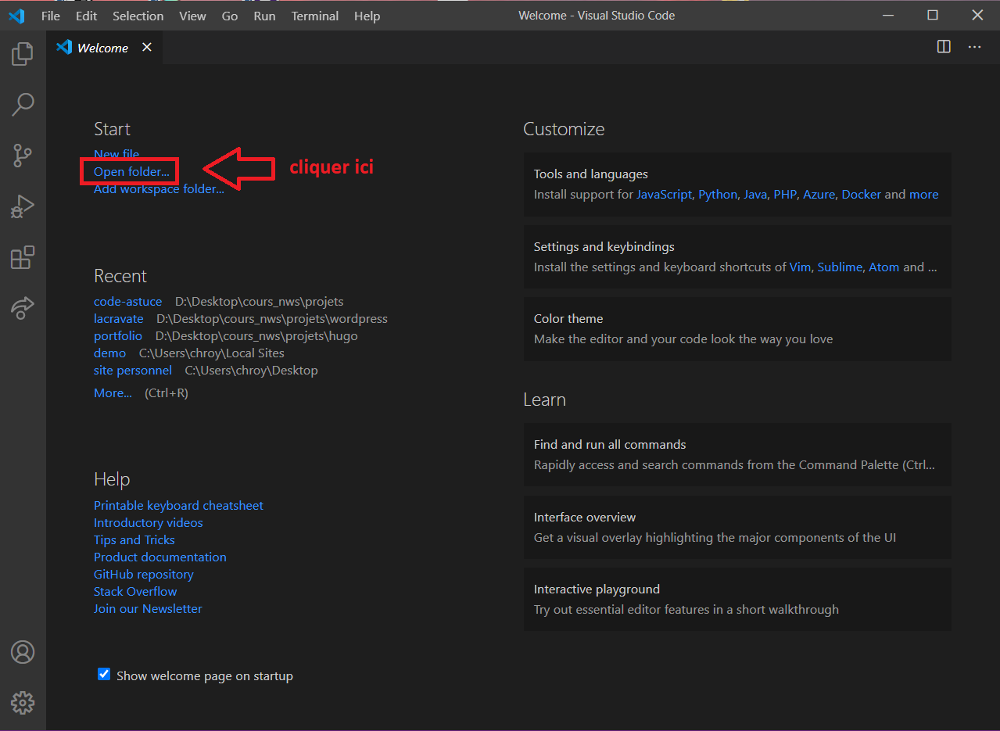
- une fenetre va apparaitre pour que l'on puisse choisir le dossier à ouvrir.
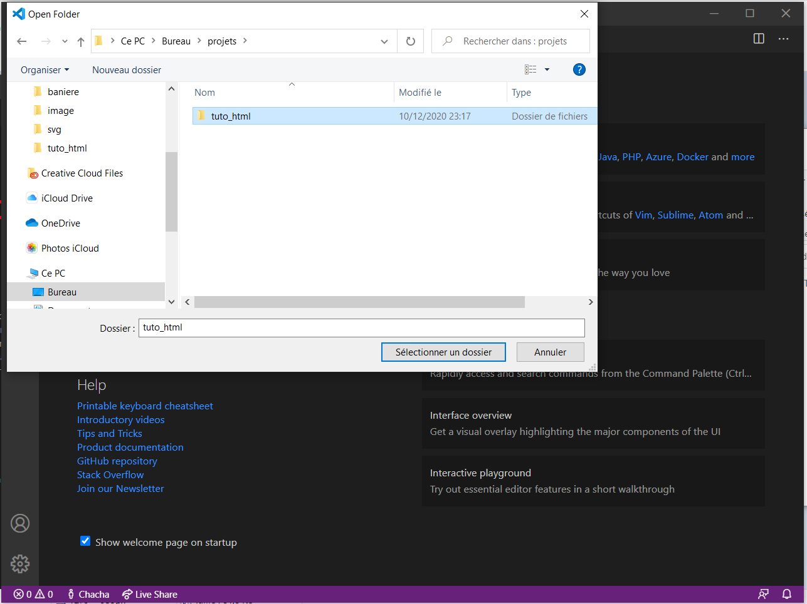2. Ou simplement faire un glissé / déposé du dossier dans l'éditeur de texte
2. Décomposition de l'affichage Visual studio code
Une fois le dossier ouvert l'affichage se décompose en deux grand cadre
// ps : j'ai fermé le "welcome" qui se trouvait dans le cadre 2
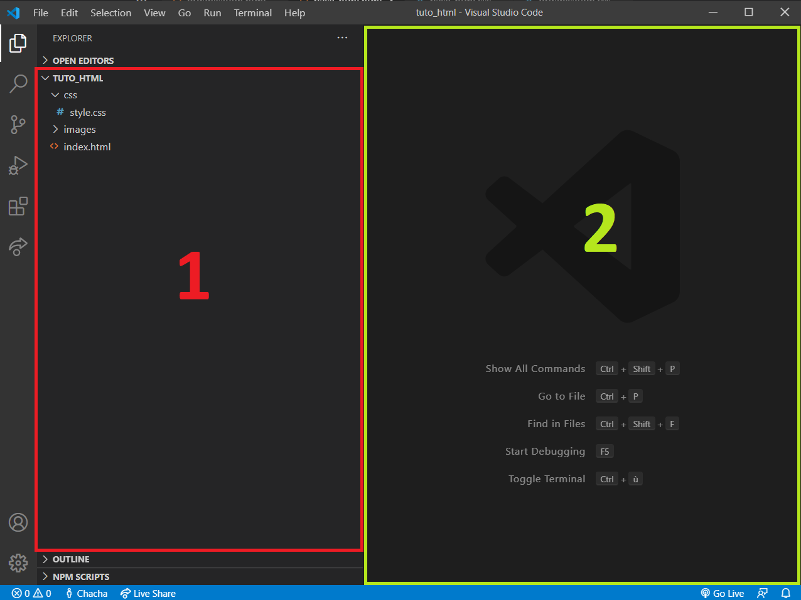Le cadre 1 (rouge) :
c'est ici que se trouve tous les sous dossiers et fichiers du projet, nous voyons son arborescence
- En premier nous retrouvons le dossier du projet, avec une fleche qui pointe vers le bas, pour indiquer que "je veux voir ce qu'il y a à l'intérieur de ce dossier".
- En dessous de cette ligne, nous nous retrouvons sur la racine du projet qui contient trois éléments. (1 dossier "CSS", un dossier "images", le fichier "index.html")
Ces trois éléments se trouvent au même niveau.
- Puis à l'intérieur du dossier "css" le fichier "style.css",
qui lui n'est pas au même niveau que le dossier css, le dossier image et le fichier index.html.
// On peut voir les différents niveaux grâce aux indentations.
Le cadre 2 (vert) :
c'est ici que l'on va écrire du code.
3. Structure Html
Dans un premier temps on va cliquer une fois sur le fichier index.html.
Ensuite, allez dans le cadre 2 et marquez : ! (le signe point d'exclamation).
Un cadre en dessous de la ligne 1 va apparaitre avec une clé à molette et le signe "point d'exclamation".
Faites la touche "ENTREE" .
Cette entrée sur la clé à molette va afficher une structure de base d'un fichier Html.
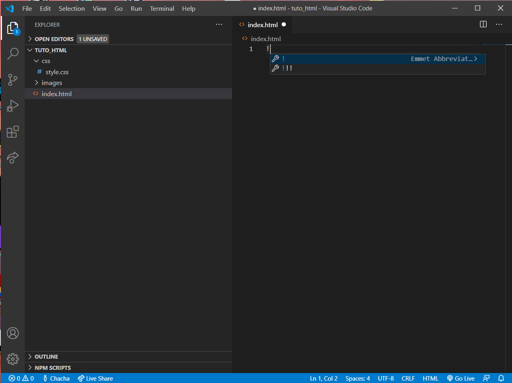
// Si la clé à molette n'apparait pas, ou si vous faites la touche ESPACE au lieu de la touche ENTREE, cela n'affichera pas la base HTML
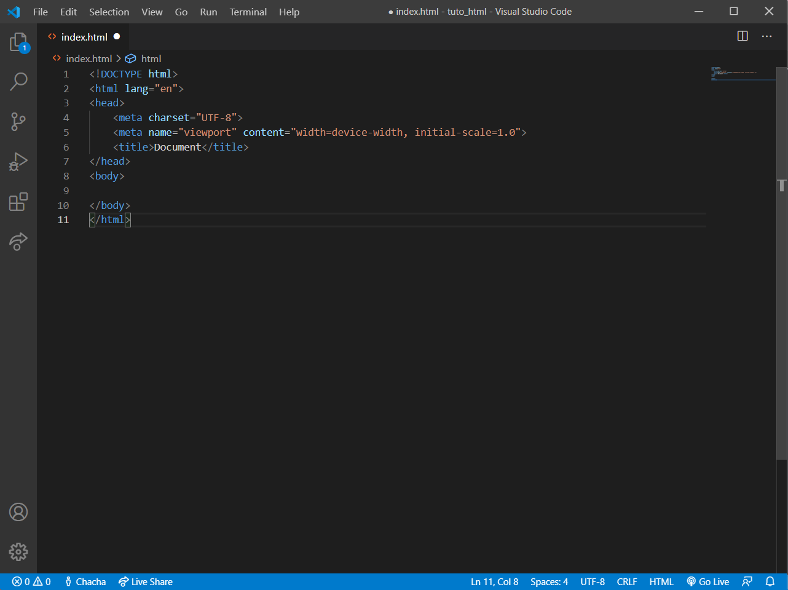//Ps j'ai fermer l'arborescence du dossier en cliquant sur l'icone qui représente deux fichiers situé en haut à gauche de l'écran dans la barre de menu verticale
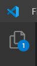 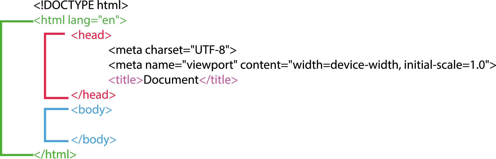
1. La balise !DOCTYPE html déclare le type de document
2. La balise html représente l'ensemble de la page et indique la langue de la page.
Si le site est en français, il faut changer la valeur "en" par "fr"
3. La balise head contient tous les éléments pour faire fonctionner correctement la page. On peut lui attribuer des métadonnées, des liens, des scripts etc...
// Ces éléments ne seront pas visible sur le site
a. La balise meta charset="UTF-8" sert à encoder la page, pour que les accents ne soient pas retranscrit en symboles illisibles
b. La balise meta name="viewport" sert pour que le site soit accessible sur téléphone
c. La balise title est le titre qu'affichera l'onglet du navigateur
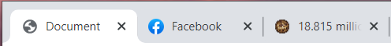
4. La balise body est la partie visible du site. Elle se décomposeras ensuite par une multitudes de balises comme header main footer etc...
Par où commencer pour coder?
Avant de commencer à coder, il faut faire du zonning pour determiner la structure de son code
1. Imaginer à quoi pourrai bien ressembler son futur site
Dans un premier temps on va dessiner son site, sur une feuille, ou sur un logiciel
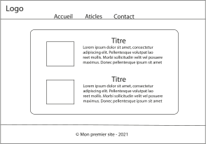2. Faire du zonning
Maintenant il faut determiner, avant de se lancer à bras perdus dans le code, tous les éléments que nous avons besoin!
Les balises
Il existe deux types de balises. Les balises inline-bloc et les balises bloc. Chaque balises que je vais renseigner aura un lien vers le site MDN.
Les balises Inlines-blocs
Les balises de type Inline-block sont des balises occupant seulement la place du texte. Elles se mettront à la suite des unes des autres sur une même ligne tant qu'elles auront de la place.
Par exemple si j'écris plusieurs liens ceux-ci seront sur la même ligne
Clique ici | Clic-là | Puis enfin clic ici
De base
- La balise <a> est utilisé pour des liens
- La balise <button> est utilisé pour créer un bouton
- La balise <img> est utilisé pour des images
- La balise <span> est utilisé pour un ou quelques mots
Pour les formulaires
- La balise <input> est utilisé pour créer une zone de remplissage de texte
- La balise <button> est utilisé pour créer un label que l'on met généralement devant un input
- La balise <textarea> est utilisé pour créer une zone de texte plus grande que le input
Pour la mise en page
- La balise <br> est utilisé pour sauter une ligne
Les balises Blocs
Les balises de type Block prennent toute la largeur de la page et se mettront les unes en dessous des autres.
Chaque balises à son interêt sémantiquement. Imaginons une maison, il y a une cuisine, une chambre, une salle de bain, un bureau etc...
Puis les endroits non définis s'appellent des pièces
On pourrait alors imaginer que les div sont des pièces sans définitions exactes.
par exemple si je mets trois balises div celles-ci se placerons les unes en dessous des autres
Balises structurantes
- La balise <header> est utilisé pour le haut d'une page, une en-tête.
- La balise <main> est utilisé pour le contenu principal d'une page, Il se trouve entre le header et le footer
- La balise <footer> est utilisé pour le bas d'une page, un pied de page.
- La balise <form> est utilisé pour déclarer un formulaire.
- La balise <nav> est utilisé pour y mettre un menu de navigations avec des liens.
- La balise <section> est utilisé pour une partie de site.
Balises pour les listes
- La balise <ul> est utilisé pour déclarer une liste non ordonnée (sans numéros).
- La balise <ol> est utilisé pour déclarer une liste ordonnée (avec des numéros).
- La balise <li> est utilisé pour les puces des listes.
Balises pour le texte
- La balise <h1> est utilisé pour un titre de niveau 1. /!\ 1 seul H1 par pages.
- La balise <h2-h6> est utilisé pour un titre de niveau 2 à 6. Le mieux est de les utiliser dans l'ordre.
- La balise <p> est utilisé pour déclarer un paragraphe.
Autre balise quand nous ne savons plus quoi d'autre utiliser
- La balise <div> balise à utiliser en dernier recourt.
A quoi servent les classes?
Les class servent à identifier un élement plus facilement.
La class peut se mettre sur une seule balise comme plusieurs.
Une balise peut avoir une ou plusieurs class.
1. Comment ça fonctionne?
Les class fonctionnent en deux temps. Une partie se trouve dans le fichier HTML et l'autre se retrouve dans la partie CSS
Comment sélectionner les élements de son HTML?
Qu'elles sont les propriétées CSS
<header>
<img src="images/logo.png" alt="logo">
<nav>
<a href="accueil.html"> <Accueil</a>
<a href="accueil.html"> <Articles</a>
<a href="accueil.html"> <Contact</a>
</nav>
</header>
<main>
<section>
<div>
<img src="images/photo1.png" alt="mer">
<h2> Mon titre </h2>
<p> Mon paragraphe </p>
</div>
<div>
<img src="images/photo2.png" alt="montage">
<h2> Mon deuxième titre titre </h2>
<p> Mon deuxième paragraphe </p>
</div>
</section>
</main>
<footer>
<p> © Charline Royer 2020 </p>
</footer>